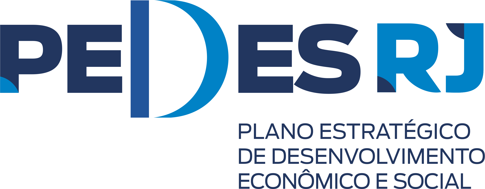
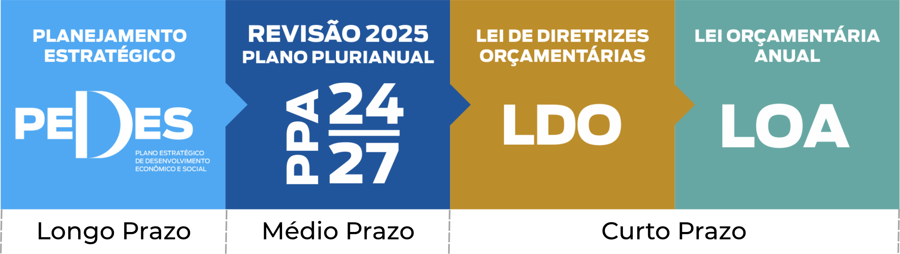

O PEDES é um instrumento previsto na Constituição do nosso estado, e está sendo elaborado por servidores públicos estaduais de diferentes setores de políticas públicas. O seu conteúdo vem sendo debatido com outros atores sociais e instituições, incluindo prefeituras municipais. Ao longo do processo de implementação do plano, suas ações serão constantemente acompanhadas e aperfeiçoadas, garantido sua atualização e efetividade. Assim, com o PEDES integrado a outros instrumentos de planejamento, pretendemos, de forma planejada e em diálogo com a sociedade, construir o estado mais plural, ambientalmente sustentável, seguro e mais igualitário para cidadãs e cidadãos fluminenses.
Saiba Mais